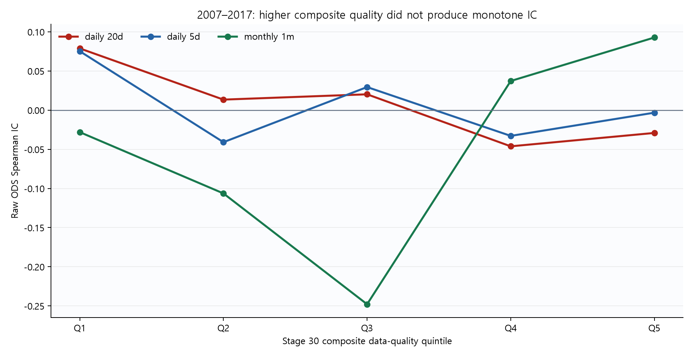
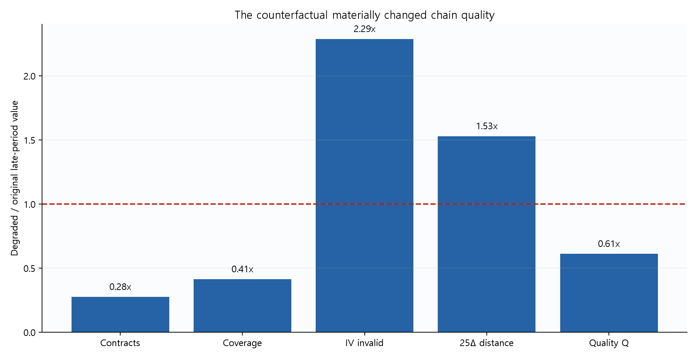
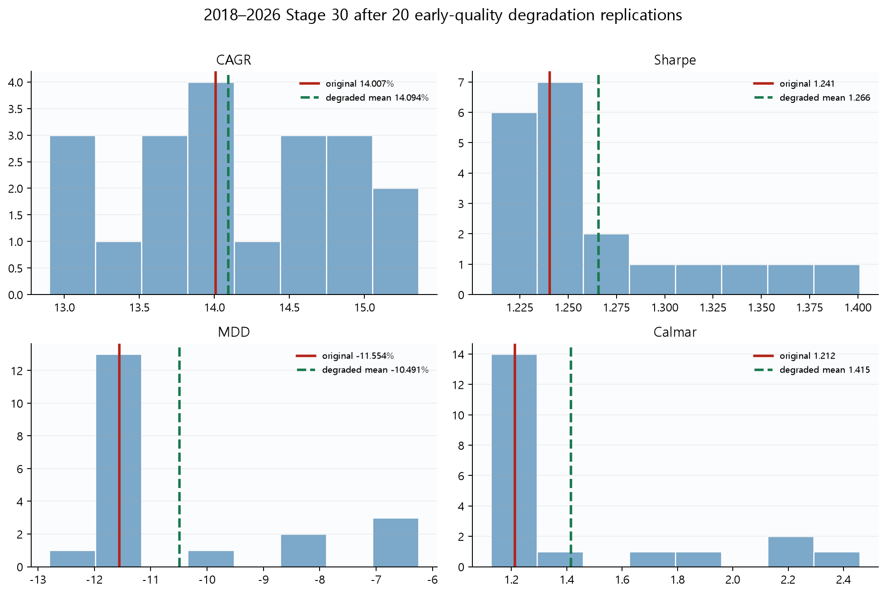

Stage 30 옵션 체인
데이터 품질 원인검증
2018~2026의 좋은 체인을 2007~2017 수준으로 의도적으로 열화하고, 초기 구간 안에서도 품질과 ODS 예측력의 관계를 따로 확인했다. 열화 체인은 메모리에서만 만들었으며 원본 옵션 체인은 수정하지 않았다.
판정
Stage 30의 후기 성과가 주로 옵션 체인 품질 개선에서 나왔다는 가설은 지지되지 않았다. 후기 체인을 강하게 열화해도 평균 CAGR과 Sharpe가 낮아지지 않았고, 2007~2017 안에서도 종합 품질 Q가 높을수록 원시 ODS IC가 단조롭게 커지지 않았다.
공식 판정은 data_quality_hypothesis_not_supported다. 이는 “데이터 품질이 무관하다”는 말이 아니다. IV 유효성에는 별도의 긍정적 단서가 남았지만 후기 성과 전체를 설명하기에는 부족하다.
무엇을 원인으로 의심했나
Stage 30의 ODS는 25델타 풋 스큐와 내재분산 비대칭의 변화를 사용한다. 초기에는 상장 계약 수가 적고 행사가 범위가 좁으며 IV 실패율도 높다. 이 차이가 후기 ODS의 측정 정밀도와 성과를 끌어올렸는지 확인하는 것이 이번 실험의 목적이다.
| 관측 품질 | 2007~2017 | 2018~2026 | 예상 영향 |
|---|---|---|---|
| 상장 계약 수 | 약 61개 | 약 221개 | 25Δ 인접 행사가 선택 정밀도 |
| 로그 행사가 커버리지 | 약 0.29~0.32 | 0.6995 | 풋·콜 꼬리 적분 범위 |
| 후기 무효 IV 비율 | 초기 템플릿으로 11.51% | 5.03% | 서페이스 계산 성공률과 노이즈 |
| 후기 25Δ 거리 | 초기 템플릿으로 0.002806 | 0.001835 | 목표 델타 근사오차 |
판정 규칙은 결과 전에 고정했다
2007~2017, Q1~Q5
5일·20일·1개월
고정 seed 20260829~
성과를 보고 규칙 변경 없음
| 고정 조건 | 가설을 지지하려면 | 실제 | 통과 |
|---|---|---|---|
| Within-era | 초기 20일·1개월 Q5-Q1 IC가 모두 양수 | 20일 -0.1079, 1개월 +0.1209 | 실패 |
| Degradation | 열화 평균 CAGR·Sharpe가 원본보다 모두 낮음 | CAGR·Sharpe 모두 평균 상승 | 실패 |
두 조건은 결과 확인 전에 코드에 고정했다. OTM 구간, 품질 임계값, 반복 seed를 성과에 맞춰 탐색하지 않았다.
2007~2017 안에서는 품질이 높을수록 ODS가 좋아졌나
| 검정 | Q1 IC | Q5 IC | Q5-Q1 | 분위-IC 상관 | 판정 |
|---|---|---|---|---|---|
| 일별 5일 | 0.0752 | -0.0032 | -0.0784 | -0.30 | 단조 개선 없음 |
| 일별 20일 | 0.0789 | -0.0291 | -0.1079 | -0.80 | 반대 기울기 |
| 월별 1개월 | -0.0281 | 0.0928 | +0.1209 | +0.60 | 중간 분위 비단조·소표본 |

월별 결과만 양의 Q5-Q1을 보였지만 Q2 -0.1063, Q3 -0.2479, Q4 +0.0373으로 이어져 매끄러운 품질-예측력 관계는 아니다. 분위별 관측치도 26~27개라 이 결과 하나로 원인을 확정하기 어렵다.
HAC 상호작용도 같은 결론이었다
future_return = a + b₁·raw_ODS + b₂·quality + b₃·(raw_ODS × quality) + error
| 목표수익률 | 관측치 | 상호작용 beta | HAC p값 | 해석 |
|---|---|---|---|---|
| 일별 5일 | 2,077 | -0.00358 | 0.106 | 양의 품질 증폭 아님 |
| 일별 20일 | 2,062 | -0.00101 | 0.683 | 양의 품질 증폭 아님 |
| 월별 1개월 | 132 | -0.00263 | 0.586 | 양의 품질 증폭 아님 |
후기 체인은 실제로 얼마나 열화됐나
각 후기 거래일에 DTE가 같은 초기 날짜를 뽑았다. 초기 날짜의 행사가/선도가격 비율과 IV 유효·결측 패턴을 템플릿으로 삼아 후기 행사가를 일대일 최근접 매칭했다. 가격과 시장 상태는 그대로 두었다.
| 품질 지표 | 원본 후기 | 열화 평균 | 열화/원본 |
|---|---|---|---|
| 일평균 상장 계약 수 | 221.08 | 60.97 | 0.28배 |
| 로그 행사가 커버리지 | 0.6995 | 0.2894 | 0.41배 |
| 무효 IV 비율 | 5.03% | 11.51% | 2.29배 |
| 25Δ 최근접 행사가 거리 | 0.001835 | 0.002806 | 1.53배 |
| DTE | 18.028 | 17.987 | 사실상 동일 |
| Stage 30 품질 Q | 0.2257 | 0.1380 | 0.61배 |

열화 뒤 성과가 무너지지 않았다
| 2018~2026 | 원본 Stage 30 | 열화 평균 | 평균 변화 | 원본보다 낮은 반복 |
|---|---|---|---|---|
| CAGR | 14.0068% | 14.0935% | +0.0867%p | 45% |
| Sharpe | 1.2405 | 1.2658 | +0.0253 | 45% |
| MDD | -11.5536% | -10.4910% | +1.0626%p | 30% |
| Calmar | 1.2123 | 1.4147 | +0.2024 | 45% |

20개 seed 중 일부에서는 CAGR과 Sharpe가 낮아졌지만 그 비율은 45%다. 동전 던지기보다 일관되게 나쁘다고 볼 분포가 아니다. MDD는 열화 평균에서 오히려 완화됐다. 품질가중이 공격적인 포지션을 줄이는 위험관리 장치라는 구조와 맞지만, 이를 새 매매 규칙으로 삼을 근거는 아니다.
원시 ODS 자체도 유지됐다
| 선행수익률 | 원본 후기 IC | 열화 평균 IC | 평균 변화 | 원본보다 낮은 반복 |
|---|---|---|---|---|
| 5일 | -0.04714 | -0.02431 | +0.02284 | 5% |
| 20일 | 0.02550 | 0.02635 | +0.00085 | 55% |
특히 Stage 30이 기대수익 조정에 쓰는 20일 관계가 열화 뒤에도 거의 그대로다. 성과만 우연히 버틴 것이 아니라 원시 신호의 순위 관계도 함께 무너지지 않았다.
남은 단서: IV 유효성
IV 유효성은 무시할 수 없는 보조 결과다. 초기 20일 IC의 Q5-Q1이 +0.1254였고, 원시 ODS×IV 유효성의 HAC 상호작용은 +0.00374, p=0.011이었다.
다만 이 진단은 공식 판정 뒤에 품질 구성요소를 분해한 결과다. 하나의 유의한 p값을 보고 IV 필터·임계값을 추가하면 사후 최적화가 된다.
| 20일 품질 척도 | Q5-Q1 IC | 상호작용 beta | HAC p값 |
|---|---|---|---|
| 종합 Q | -0.1079 | -0.00101 | 0.683 |
| 롤 제외 측정 품질 | +0.0161 | +0.00119 | 0.391 |
| 상장 계약 수 | -0.0175 | -0.00126 | 0.549 |
| 행사가 커버리지 | +0.0132 | +0.00004 | 0.978 |
| IV 유효성 | +0.1254 | +0.00374 | 0.011 |
| 25Δ 정밀도 | +0.0120 | -0.00017 | 0.929 |
경제적으로 어떻게 읽어야 하나
체인이 촘촘하면 25델타 스큐와 IVA를 더 정밀하게 계산할 수 있다는 논리는 여전히 타당하다. 다만 더 정확한 센서가 곧 더 강한 알파를 뜻하지는 않는다. 시장 참가자 구조, 유동성, 가격발견 기능과 실제 위험프리미엄의 부호가 시대에 따라 달라질 수 있기 때문이다.
Stage 30의 최종 성과에는 원시 ODS뿐 아니라 인과적 평균수익 보정, 거시 확률, 기술적 신뢰도, VIX6 위험 엔진과 SLSQP 배분이 함께 들어간다. 이번 결과는 체인 품질 하나를 후기 성과의 주된 원인으로 지목하기 어렵다는 뜻이다. 초기 데이터가 후기처럼 완벽했다면 후기와 같은 성과를 냈을 것이라는 반대방향 명제도 증명하지 못했다.
한계와 다음 검증
- 좋은 후기 데이터를 나쁘게 만드는 검정이다. 존재하지 않는 초기 고품질 체인을 복원하지는 못한다.
- 행사가 그리드와 IV 패턴은 열화했지만 과거 호가 스프레드, 체결 가능성, 거래량·미결제약정까지 재현하지 못했다.
- 20회는 방향 판정을 위한 진단 표본이다. 극단 꼬리확률을 정밀하게 추정하는 대규모 몬테카를로는 아니다.
- IV 유효성은 보조 진단이다. 다음 연구에서는 실패 원인을 사전에 나누고 독립 OOS 구간에서 고정 필터를 검정해야 한다.
현 단계에서는 Stage 30을 데이터 품질 문제 때문에 폐기할 이유도, 초기 고품질 체인을 가정해 성과를 상향 보정할 이유도 없다.
원본 보존과 재현 파일
| 감사 항목 | 결과 |
|---|---|
| 통합 옵션 체인 SHA-256 | 8687e09198e4951716fa87e301db7f98567fc681dd33c86c8c24d4ec6de0d497 |
| 원본 옵션 파일의 해시·크기·수정시각 | 실험 전후 동일 |
| 재구축 Stage 30 특성 최대 절대오차 | 2.98e-14 이하 |
| 열화 체인 저장 | 없음, 메모리에서만 생성 |
validate_data_quality_hypothesis.py: 5분위·HAC·열화 20회·판정·무결성 감사build_report_assets.py: 저장된 CSV로 보고서 차트 재생성outputs/validation_report.json: 고정 규칙과 전체 수치outputs/early_quality_quintile_ic.csv: 초기 품질 분위별 ICoutputs/late_degradation_replications.csv: seed별 열화 결과outputs/late_degradation_comparison.csv: 원본·열화 성과 비교outputs/raw_option_chain_manifest_before.json/after.json: 원본 무결성 기록